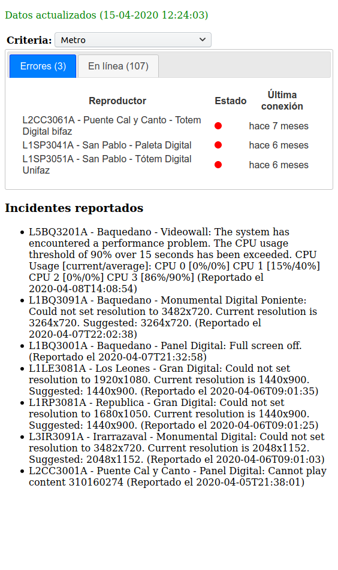
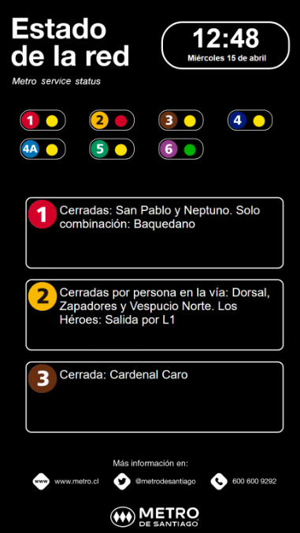
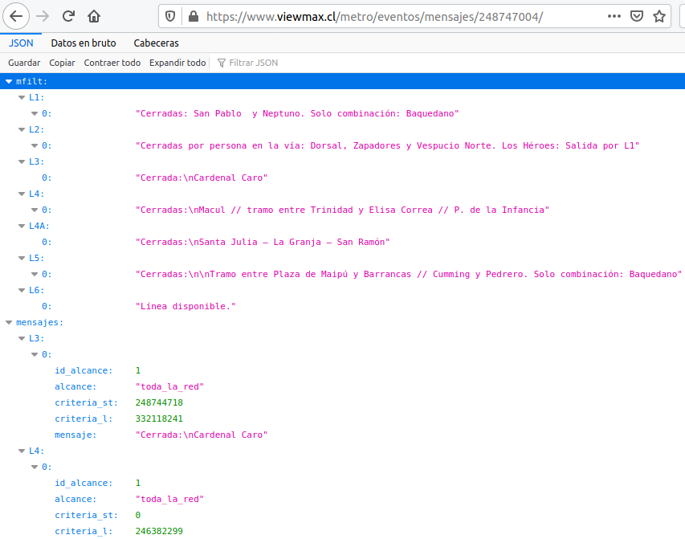
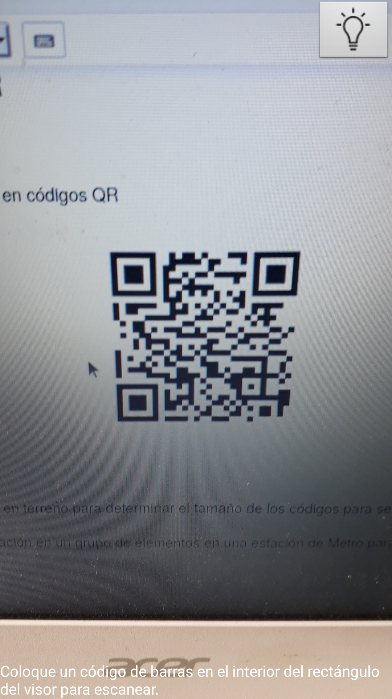
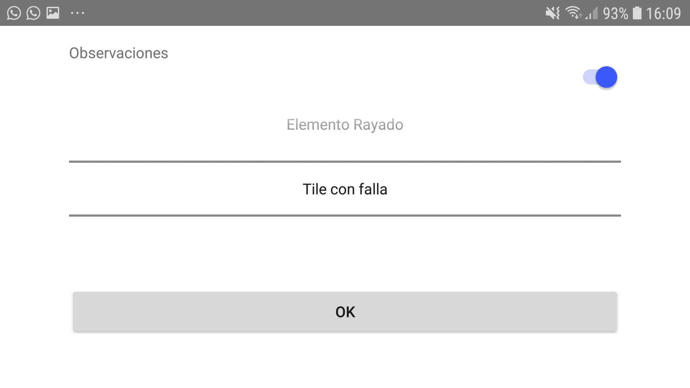

Desarrollo de Proyectos en Metro
Proyectos actualmente en operación
Monitoreo de red
Descripción
- Monitoreo de elementos de Metro utilizando la API de Broadsign para conocer el estado de los reproductores.
- Impementación de interface web (desktop y móvil) para visualizar el estado de reproductores
- Generación de alarmas ante cambios en el estado de elementos (en revisión)
Interface web

Estado de la Red
Descripción
- Aplicación en Broadsign que informa estado de la red de Metro usando webservice de Metro
- Opcionalmente puede exhibir simultáneamente auspicio (deshabilitado desde octubre de 2019)
Semáforo en Elementos

Interface con webservice

Auspicios Metro
Descripción
Aplicaciones para exhibir publicidad en Metro, con fuentes dinámicas de información:
- Variables meteorológicas (temperatura, índice UV)
- Contadores
- Hora actual
Proyectos en etapa de desarrollo
Implementación de códigos QR
Descripción
- Conversión de códigos de elementos de Metro en códigos QR
Implementación de códigos QR
- Durante febrero 2020 se hicieron pruebas en terreno para determinar el tamaño de los códigos para ser legibles bajo las condiciones más desfavorables
- Actualmente se está preparando la instalación en un grupo de elementos en una estación de Metro para empezar pruebas con aplicaciones que usarán los códigos QR
Verificación de elementos
Descripción
- Aplicación móvil para verificar elementos de Metro
- Hace uso de los códigos QR para identificar el elemento
- Proporciona geolocalización para verificar que las imágenes correspondan a las estaciones
- Permite identificar al usuario que hace la verificación
- Registra el estado del elemento
Verificación de elementos
- Ventana inicial de app
Verificación de elementos
- Escaneo de QR

Verificación de elementos
- App permite fotografiar elemento cuyo QR se escaneó

Verificación de elementos
- Observaciones al estado del elemento

Verificación de elementos
- Información se sube a servidor en la oficina
Verificación de elementos
- La aplicación permitirá centralizar y uniformar la información
- Los datos almacenados permitirán elaborar indicadores con respecto a distintos aspectos de la operación
- Con indicadores consistentes y periódicos, será posible implementar mejoras y evaluar los resultados
- Se podrá extender el uso de la aplicación a los demás proyectos de Massiva
Gestión y Manejo de OP
Descripción
- La información de fechas para montar y desmontar campañas está centralizada en Ad Manager
- La interface de Ad Manager no facilita un manejo ágil de la información de campañas
- Particularmente se dificulta la actualización en Ad Manager del estado de las instalaciones
- También se hace difícil determinar las fechas de término de las campañas, dado el manejo que hace Ad Manager de las OP
Gestión y Manejo de OP
- Para resolver las dificultades anteriores, se decidió implementar un sistema que extraiga la información de OP desde Ad Manager y permita una gestión más sencilla
Pruebas de Broadsign en Linux
Descripción
- Instalación utilizando Windows 10
- Ambiente conocido permitió partida rápida de las tareas de instalación:
- herramientas para clonación de equipos
- administración remota
- configuración
Pruebas de Broadsign en Linux
- Dificultades en la operación:
- administración masiva de equipos
- comportamiento indeseado de componentes del sistema operativo (Windows Updates)
Pruebas de Broadsign en Linux
- Se busca resolver las dificultades de operación
- Se evita la compra de licencias para Windows 10
- Se espera mejorar la estabilidad de los elementos